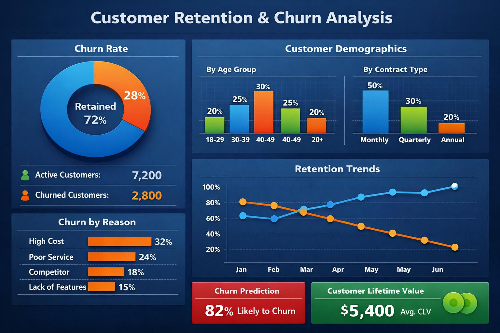

Retail Revenue and Cashflow Performance Dashboard Using Tableau
This project analyzes retail sales and payment behavior for a small convenience shop between November 2025 and January 2026

Premium Administration Officer| Data Analyst skilled in Excel,SQL,Tableau and R @VictoriaNobleBonney
This project analyzes retail sales and payment behavior for a small convenience shop between November 2025 and January 2026
This project tells the story of how I turned raw data into actionable insights to answer one critical question: Why are customers leaving, and how can we keep them? By analyzing customer behavior, acquisition channels and product usage patterns, I uncovered retention drivers and built a roadmap for reducing churn and boosting lifetime value

This project investigates why so many people let their life insurance policies lapse and what insurers can do to reduce it. Using a real dataset and exploratory data analysis in R, I identified key trends and proposed data-driven, real-world solutions
Accra, Ghana